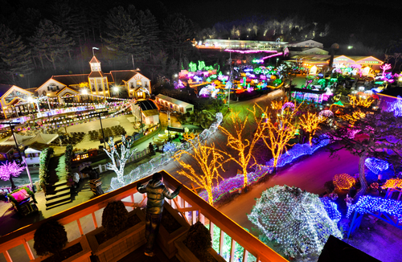
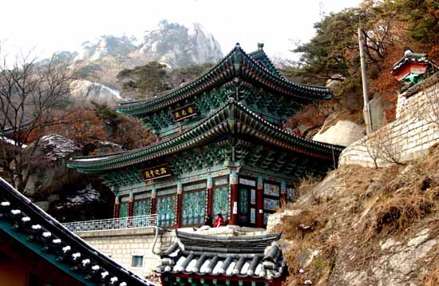
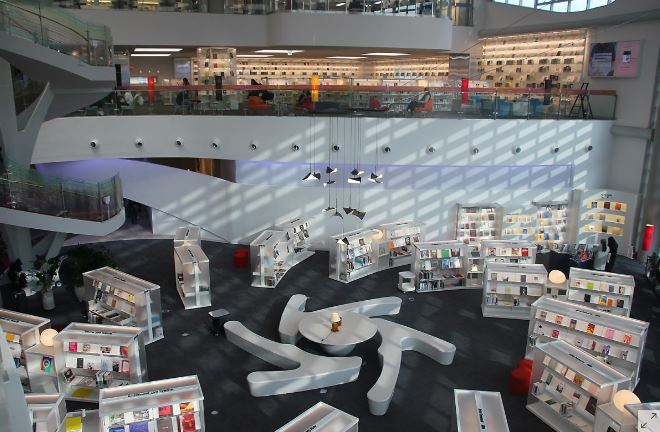

| 허브아일랜드 | |||||||||
|---|---|---|---|---|---|---|---|---|---|
|  |
|
||||||||
|
의정부에서 조금 거리가 있지만 자차를 이용한다면 30분 정도 안에 도착 할 수 있다. 전국 최초의 허브박물관으로서 다양한 허브 관련 체험을 할 수 있으며 안에서 거의 모든 것들을 해결할 수 있는 멀티 플렉스 공간 현 시점에는 라벤더 축제가 한창으로 입구에서 부터 향기가 날 정도이다 |
|||||||||
| 망월사 [望月寺] | |||||||||
|---|---|---|---|---|---|---|---|---|---|
|  |
|
||||||||
|
대한불교조계종 제25교구 본사인 봉선사(奉先寺)의 말사이다. 신라 때인 639년(선덕여왕 8)에 해호화상(海浩和尙)이 왕실의 융성을 기리고자 창건했다. 절의 이름은 대웅전 동쪽에 토끼 모양의 바위가 있고, 남쪽에는 달 모양의 월봉(月峰)이 있어 마치 토끼가 달을 바라보는 모습을 하고 있다는 데서 유래하였다. 신라 경순왕(재위 927∼935)의 태자가 이곳에 은거하였다고 한다. 현존하는 당우로는 석조전(石造殿)을 비롯하여 영산전·칠성각·낙가암·선원· 범종각·요사채·범종루 등이 있다. 문화재로는 망월사혜거국사부도(경기도 유형문화재 122)와 천봉 태흘(泰屹:1710∼1793)의 부도(경기도 문화재자료 66), 1793년에 세운 태흘의 천봉탑(天峰塔)과 1796년 수관거사(水觀居士)가 명(銘)한 망월사천봉선사탑비(경기문화재자료 67)가 있다. 망월사에서 30km 떨어진 곳에 광법암(廣法庵)이라는 부속암자가 있는데 원래 영산전 앞에 있던 것을 1965년 지금의 자리로 옮긴 것이다. 망월사는 명승들을 많이 배출하여 경기 지방의 이름 있는 선(禪) 사찰로 유명하다. 의정부 망월사역에서 내린다고 망월사에 전혀 가깝지 않다 |
|||||||||
| 수락산 | |||||
|---|---|---|---|---|---|
 |
|
||||
|
수락산 정상에서 남쪽에 있는 불암산(佛岩山)으로 능선이 이어지며 동쪽에 금류계곡(金流溪谷)이 있다. 서쪽 비탈면에 쌍암사(雙岩寺)·석림사(石林寺), 남쪽 비탈면에 계림암(鷄林庵)·흥국사(興國寺), 동쪽 비탈면에 내원암(內院庵)이 있고, 내원암의 법당 뒤에는 고려시대 이전의 것으로 추정되는 높이 2m의 석조미륵입상이 있다. 조선시대 수양대군이 계유정난(癸酉靖難)을 일으켜 조카인 단종을 죽이고 왕이되자, 매월당 김시습(梅月堂 金時習)이 속세와 인연을 끊고 이곳 석림사계곡에서 은거하였다고 전해진다. 김시습을 존경하던 박세당(朴世堂)은 석림사계곡에 김시습을 기리는 청절사(淸節寺)를 세웠는데 청절사는 없어지고 그자리에 노강서원(鷺江書院)이 세워졌다. 노강서원은 숙종의 계비인 인현왕후 폐위를 반대하다 죽은 박태보를 기리는 서원이며 박태보는 박세당의 둘째아들이다. 남쪽 불암산과 사이에는 선조의 부친인 덕흥대원군(德興大院君)의 묘가 있다. 사찰로는 흥국사(興國寺), 학림사(鶴林寺), 내원암(內院庵), 도안사가 있다 의정부에서는 7호선 종점인 장암역에서부터 올라갈 수 있는데 주말만 되면 많은 등산객들로 붐빈다 |
|||||
| 의정부 미술 도서관 | ||||
|---|---|---|---|---|
|  |
|
|||
|
의정부에 위치한 시립도서관 전국 최초의 미술도서관으로 지상 3층 지하 1층 규모로 건립되었으며 다양한 공간들을 가지고 있다. 1층에는 미술관련 서적으로 이루어져 있으며 2층에는 아이들을 위한 공간 3층에는 신진작가들을위한 공간으로 이루어져 있다. 특이할 만한 점은 작가들을 위한 공간은 통유리로 이루어져 있어 시민들과의 소통을 할 수 있게 하였다. |
||||